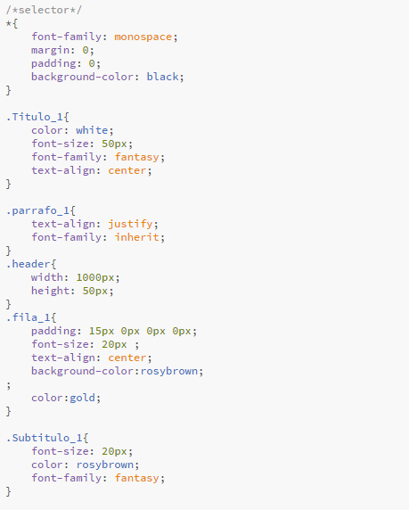
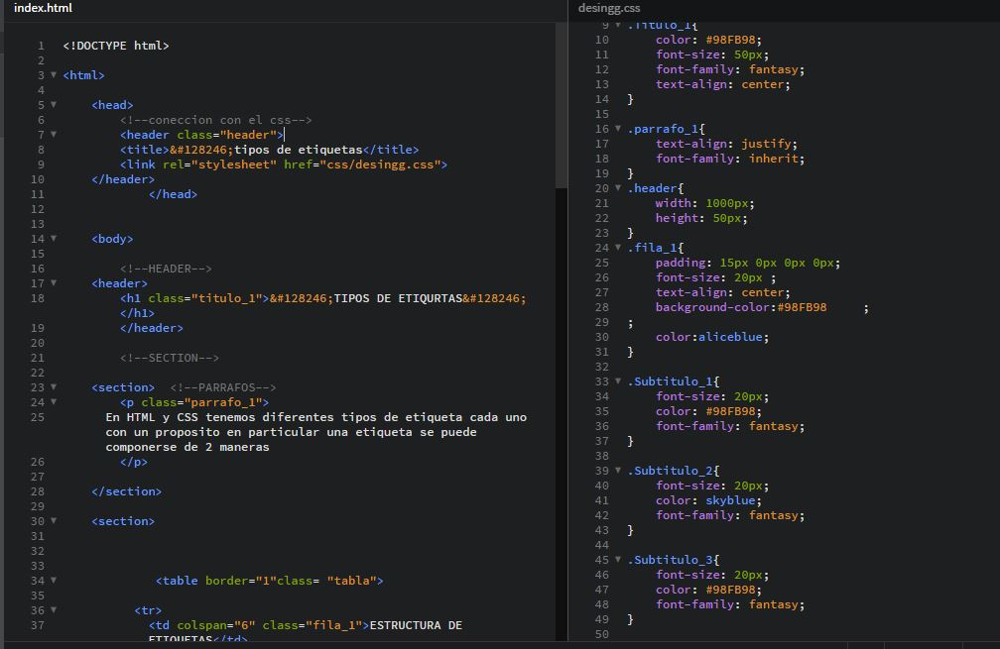
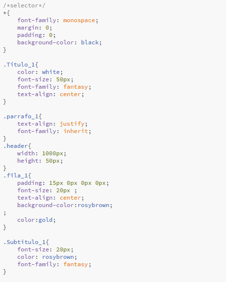
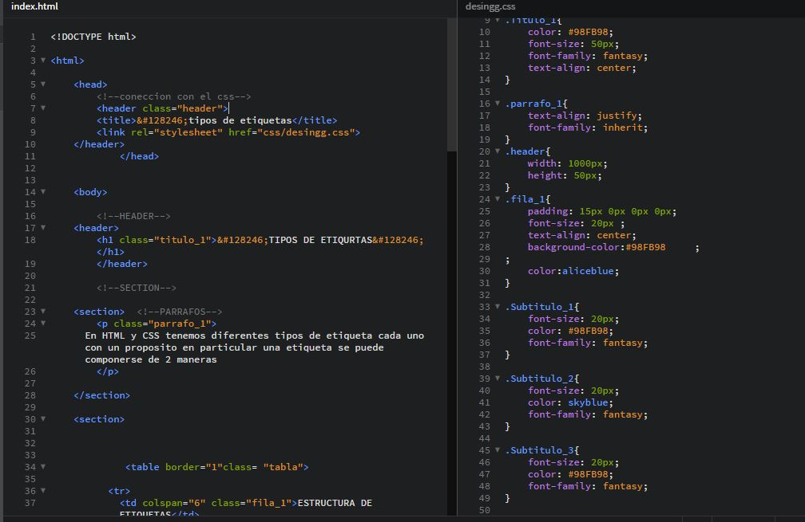
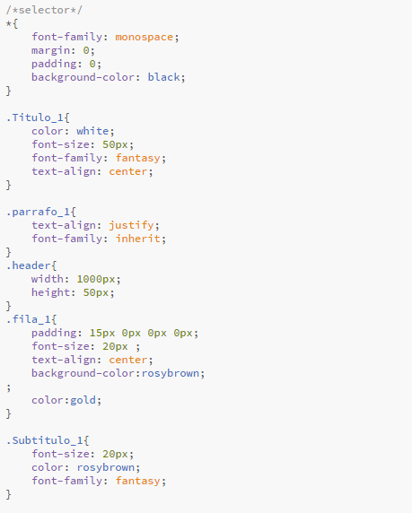
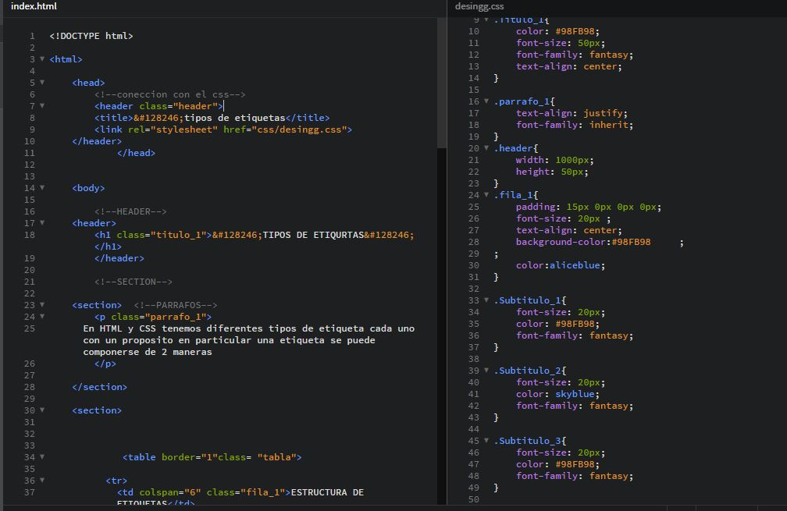

En HTML y CSS tenemos diferentes tipos de etiqueta cada uno con un proposito en particular una etiqueta se puede componerse de 2 maneras
| ESTRUCTURA DE ETIQUETAS | |||||
| Etiquetas que solo se aperturan | Etiquetas que tienen una apertura y un sierre | ||||
| Este tipo de etiqueta comun mente se utilizan para indicar una direccion u origen se componen por argumentos u opciones tales como src href. | este tipo de etiquetas comun mente se utilizan para encerrar un contenido tales como img entre otros | ||||

